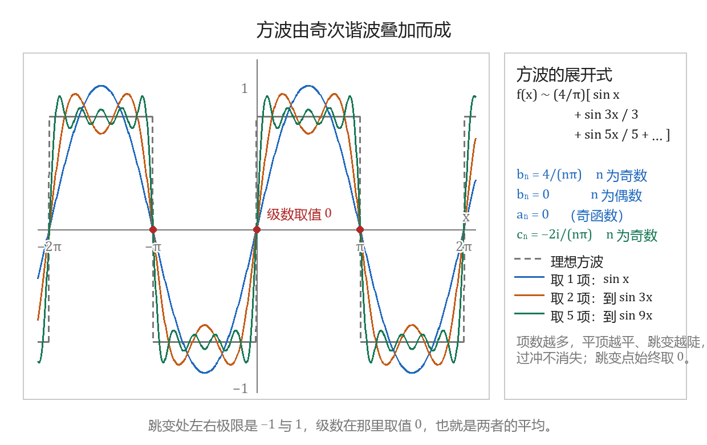
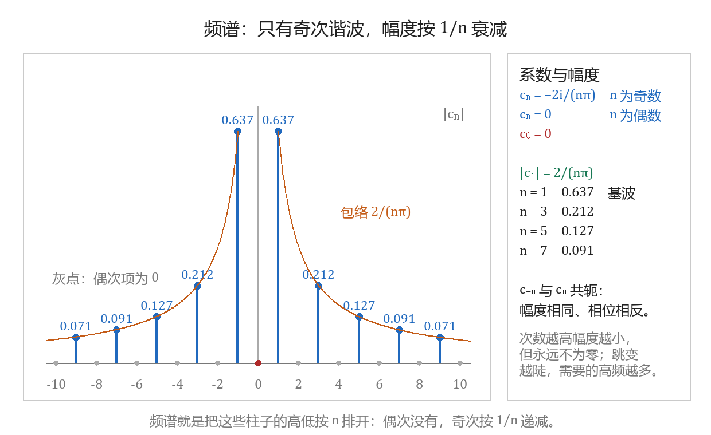
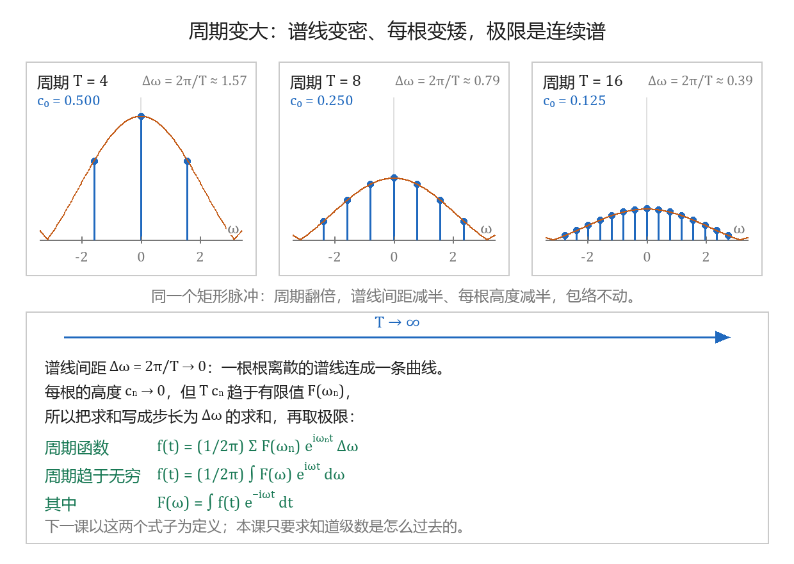

傅里叶级数与正交展开
本节目标：能写出周期函数的傅里叶系数公式、算出方波的系数，并说清从级数到变换这一步是怎么跨过去的。
卷面怎么考
本课的内容在七套公开卷子里（合肥工业大学 2022—2025 年 A、B 卷）没有出现过：填空、选择、解答三部分都考不到傅里叶级数本身。同一章里上卷面的是傅里叶变换与拉普拉斯变换，两者的分量差得很远。
| 卷子 | 填空 | 选择 | 解答 |
|---|---|---|---|
| 2022—2024 年 A、B 卷（六套） | 第 5 题求傅里叶变换，3 分 | 解析性、收敛半径、极点阶，3 分 | 第 8 题用拉普拉斯变换解微分方程，9 分 |
| 2025 年 A 卷 | 第 5 题求拉普拉斯变换，4 分 | 第 5 题问哪个函数不存在傅里叶变换，4 分 | 第 9 题同上，10 分 |
六套卷的填空第 5 题依次给的是 \sin t+i\cos t、e^{it}、\cos 3t、常值函数的逆变换、常值函数 -2、\delta(t-1)，都是一行套公式就出结果的小题。
看懂频谱与系数公式即可，不要为傅里叶级数多花时间。 本章要投入的是拉普拉斯变换——它每套卷子都占着一道 9～10 分的大题。本课只要求三件事：会写三角形式与复指数形式的系数公式、会算一个方波的系数、理解从级数到变换那一步怎么跨过去。
唤醒：级数与正交性
第 3 章的幂级数讲过把一个函数写成一串更简单的函数之和，这里的动作相同，只是把 z^n 换成 \cos nx 与 \sin nx。第 1 章的欧拉公式 e^{i\theta}=\cos\theta+i\sin\theta 让三角式与复指数式可以互换，本课的两种级数形式靠的就是这一条。还有一条来自定积分：三角函数在一个整周期上积出来常常是零，下一节把这件事说清，系数公式就跟着出来了。
三角函数系的正交性
「正交」这个词从向量的内积来：两个向量内积为零时称它们正交。搬到函数上，先要把内积定义出来。设 f、g 在 [-l,l] 上可积，定义
\langle f,g\rangle=0 时称 f 与 g 在 [-l,l] 上正交。复值函数的内积多一个共轭，写成 \langle f,g\rangle=\int_{-l}^{l}f(x)\overline{g(x)}\,dx，这样 \langle f,f\rangle=\int|f|^2\,dx 总是非负实数。
三角函数系 1,\cos x,\sin x,\cos 2x,\sin 2x,\dots 在 [-\pi,\pi] 上两两正交，每个函数与自己的内积是一个常数：
复指数系 \{e^{inx}\}_{n\in\mathbb{Z}} 在同一个区间上满足
这一组关系在本课只用在一处：把函数乘上其中一项再积分，其他项全部归零，只剩这一项前面的系数。下一节的系数公式就是这样抽出来的。
三角形式的级数
设 f 以 2\pi 为周期、在 [-\pi,\pi] 上可积，把它写成三角函数系的线性组合：
\sim 读作「展成」，表示右边是一列待定系数的级数，等号成立与否由后面的收敛条件决定。定系数的办法是两边各乘一项再积分：乘 \cos kx 后积分，由正交性右边只剩 a_k\cos^2kx 一项，得 a_k\pi=\int_{-\pi}^{\pi}f\cos kx\,dx；乘 \sin kx 同理。于是
分母上的 \pi 来自 \int\cos^2nx\,dx=\pi。常数项写成 \frac{a_0}{2} 是为了让 a_0 与 a_n 共用一个公式；它的值就是 f 在一个周期上的平均值。级数里 a_n\cos nx+b_n\sin nx 叫 n 次谐波，n=1 那一项叫基波，\frac{a_0}{2} 叫直流分量。
2π 与 2l 两套公式
周期为 2l 时（l\ne\pi），把 x 换成 \frac{\pi x}{l}：三角函数里的 nx 变成 \frac{n\pi x}{l}，系数前的 \frac{1}{\pi} 变成 \frac{1}{l}，积分区间换成 [-l,l]：
两套混用时的错处集中在两处：三角函数的自变量里漏掉 \frac{\pi}{l}，以及系数前的 \frac1\pi 与 \frac1l 用反。判定办法是先看题目给的周期，取它的一半作为 l；写完代 l=\pi 进去，公式应当退回上面那一套。
| 周期 | 三角函数里的自变量 | 系数前的常数 | 积分区间 |
|---|---|---|---|
| 2\pi | \cos nx、\sin nx | \frac{1}{\pi} | [-\pi,\pi] |
| 2l | \cos\frac{n\pi x}{l}、\sin\frac{n\pi x}{l} | \frac{1}{l} | [-l,l] |
| T | \cos n\omega_0x、\sin n\omega_0x，\omega_0=\frac{2\pi}{T} | \frac{2}{T} | 任取一个长度为 T 的区间 |
最后一行与第二行是同一个公式：T=2l 时 \frac{2}{T}=\frac1l、\omega_0=\frac{\pi}{l}。
奇偶函数省一半
[-l,l] 关于原点对称，被积函数的奇偶性直接决定哪些积分是零：奇函数在对称区间上积分为零，偶函数在对称区间上的积分等于 [0,l] 上的两倍。
| f 的奇偶性 | 为零的系数 | 要算的系数 |
|---|---|---|
| 奇函数 f(-x)=-f(x) | a_n=0（含 a_0） | b_n=\frac{2}{l}\int_{0}^{l}f(x)\sin\frac{n\pi x}{l}\,dx |
| 偶函数 f(-x)=f(x) | b_n=0 | a_n=\frac{2}{l}\int_{0}^{l}f(x)\cos\frac{n\pi x}{l}\,dx |
判据来自「奇 × 偶 = 奇」：f 为奇时 f\cos\frac{n\pi x}{l} 是奇函数，f\sin\frac{n\pi x}{l} 是偶函数；f 为偶时两者对调。
这条简化的前提是区间关于原点对称。给的是 [0,2l] 这类平移过的区间时，先看 f 关于中点 x=l 的奇偶性，或者直接平移回 [-l,l]，不要拿原点对称的结论硬套。
方波：把系数算一遍
例：f 以 2\pi 为周期，在一个周期内
第一步定奇偶。f 是奇函数，所以 a_n=0（n=0,1,2,\dots），只剩 b_n。第二步按公式算：
n 为偶数时 1-(-1)^n=0，为奇数时等于 2，于是
方波只有奇次谐波，第 n 次谐波的幅度是 \frac{4}{n\pi}，按 \frac1n 递减。频谱的内容就是这一句。

assets/img/gen/傅里叶级数-方波-部分和逼近-本机-01.py），许可：本项目自产）狄利克雷条件与间断点
级数是否收敛到 f，由下面这组条件保证（狄利克雷条件，本课程只记结论）：设 f 以 2l 为周期，在一个周期内连续或只有有限个第一类间断点（左右极限都存在），并且只有有限个极值点，则 f 的傅里叶级数处处收敛，且
- 在 f 的连续点 x 处，级数的和等于 f(x)；
- 在间断点 x 处，级数的和等于 \frac{f(x^-)+f(x^+)}{2}；
- 在区间端点 x=\pm l 处，级数的和等于 \frac{f(-l^+)+f(l^-)}{2}。
方波在 x=0 处左右极限分别是 -1 与 1，级数在那里取值 0；x=\pm\pi 处同理。要写成等号就得把断点剔出来：
代一个特殊点把级数化成数项级数求和，是傅里叶级数最可能出现的考法。把 x=\frac{\pi}{2} 代进去，左边是 f\left(\frac{\pi}{2}\right)=1，于是
把 x=0 代进去只得到 0=0，因为那里是间断点，级数的和不等于 f(0)。
复指数形式
欧拉公式 e^{inx}=\cos nx+i\sin nx 同时给出 \cos nx=\frac{e^{inx}+e^{-inx}}{2} 与 \sin nx=\frac{e^{inx}-e^{-inx}}{2i}。代入三角形式的级数、按 e^{inx} 归并同类项，得
两种形式的系数可以互算：
反过来是 a_n=c_n+c_{-n}、b_n=i\left(c_n-c_{-n}\right)。三角形式的 a_n、b_n 是两个实数，同一个谐波被拆成两个数；复指数形式的 c_n 是一个复数，模就是这一项的幅度，幅角是它的初相。
周期为 2l 时，把 e^{inx} 换成 e^{i\frac{n\pi x}{l}}，系数前的 \frac{1}{2\pi} 换成 \frac{1}{2l}。
方波（n 为奇数）的复指数系数由 a_n=0、b_n=\frac{4}{n\pi} 直接读出：c_n=-\frac{2i}{n\pi}，c_{-n}=\frac{2i}{n\pi}；n 为偶数与 n=0 时 c_n=0。
频谱看什么
把 |c_n| 按 n 排开画成一根根柱子，得到的图叫幅度谱；把 \arg c_n 按 n 排开叫相位谱，两者合起来叫频谱。方波的幅度谱里只有奇数位置有柱子，高度是 \frac{2}{n\pi}。

assets/img/gen/傅里叶级数-方波-频谱-奇次谐波-本机-02.py），许可：本项目自产）三条要读出来的结论：
- 偶次谐波为零。方波在一个周期里正负各占一半，它在 \cos 2kx 与 \sin 2kx 上的投影正好相互抵消。
- 幅度按 \frac1n 递减而永远不为零。跳变越陡需要的高频越多，上一张图里取到九次谐波才贴近方波，原因就在这里。
- c_{-n} 与 c_n 共轭，两根柱子一样高、相位相反。负频率没有单独的物理含义，它是复指数写法带出来的配对项。
级数怎么走到变换
级数只对周期函数给出。把周期记作 T，基频 \omega_0=\frac{2\pi}{T}，复指数形式写成
相邻两根谱线的间距是 \Delta\omega=\omega_0=\frac{2\pi}{T}，把和式改写成以它为步长的形式：
T\to+\infty 时，\Delta\omega\to0，一根根谱线连成连续的一片；每根的高度 c_n\to0，乘积 Tc_n 却趋于有限值，记作 F(\omega_n)。求和随之变成积分：
后一个式子叫傅里叶变换，前一个叫傅里叶逆变换。离散谱换成连续谱、c_n 换成 F(\omega)，就是这一步的全部内容；下一课从这两个式子开始。

assets/img/gen/傅里叶级数-级数到变换-周期增大-本机-03.py），许可：本项目自产）练习：算一次系数
第 1 步，手算。用 b_n=\frac{2}{\pi}\int_{0}^{\pi}\sin nx\,dx 算出方波的 b_1、b_2、b_3，写成三个小数（保留三位）。
第 2 步，核对。把下面这段存成 fourier.py 跑一次，三行输出就是上一步的三个数：
from math import pi, sin
def b(n, N=200001):
h = 2*pi/(N-1)
return sum((-1 if (-pi + i*h) < 0 else 1)*sin(n*(-pi + i*h))*h for i in range(N))/pi
for n in (1, 2, 3):
print(n, round(b(n), 3))输出 1 1.273、2 -0.0、3 0.424，与手算的 \frac{4}{\pi}=1.273、0、\frac{4}{3\pi}=0.424 一致。第二行的 -0.0 就是 0，浮点积分的符号残留。
第 3 步，改一行看变化。把 (1, 2, 3) 改成 (1, 2, 3, 4, 5, 6) 再跑：偶次仍然全是 0，奇次的数按 \frac1n 变小。
第 4 步，看间断点。把循环换成下面这几行，算的是部分和在 x=\frac{\pi}{2} 与 x=0 的值：
from math import pi, sin
for K in (1, 2, 5, 50):
S = lambda x, K=K: 4/pi*sum(sin((2*k-1)*x)/(2*k-1) for k in range(1, K+1))
print(K, round(S(pi/2), 3), round(S(0), 3))x=\frac{\pi}{2} 一列是 1.273、0.849、1.063、0.994，往 1 靠近，因为那里是连续点，f\left(\frac{\pi}{2}\right)=1；x=0 一列恒为 0.0，因为那里是间断点，级数取左右极限的平均。
带走的公式卡
| 要写的东西 | 写法 |
|---|---|
| 正交性 | \int_{-\pi}^{\pi}\cos nx\cos kx\,dx=\int_{-\pi}^{\pi}\sin nx\sin kx\,dx=0（n\ne k），自身为 \pi |
| 三角形式（2\pi） | f(x)\sim\frac{a_0}{2}+\sum\left(a_n\cos nx+b_n\sin nx\right) |
| 系数（2\pi） | a_n=\frac1\pi\int_{-\pi}^{\pi}f\cos nx\,dx，b_n=\frac1\pi\int_{-\pi}^{\pi}f\sin nx\,dx |
| 系数（2l） | a_n=\frac1l\int_{-l}^{l}f(x)\cos\frac{n\pi x}{l}dx，b_n 同形换 \sin |
| 奇偶简化 | 奇函数只有 b_n，偶函数只有 a_n |
| 复指数形式 | f(x)\sim\sum c_ne^{inx}，c_n=\frac{1}{2\pi}\int_{-\pi}^{\pi}f(x)e^{-inx}dx |
| 两种形式互换 | c_0=\frac{a_0}{2}，c_n=\frac{a_n-ib_n}{2}，c_{-n}=\frac{a_n+ib_n}{2} |
| 间断点 | 级数取 \frac{f(x^-)+f(x^+)}{2} |
| 方波 | b_n=\frac{4}{n\pi}（n 奇），只有奇次谐波，\vert c_n\vert=\frac{2}{n\pi} |
| 级数到变换 | T\to+\infty，\Delta\omega\to0，Tc_n\to F(\omega)，求和变积分 |
- 李君、于非非《复变函数与积分变换》§4.1 积分变换的预备知识、§4.2 傅里叶级数
- 拉普拉斯变换与傅里叶变换（南京大学数字信号处理课程讲义）
- 合肥工业大学期末试卷（含答案与逐题分值）